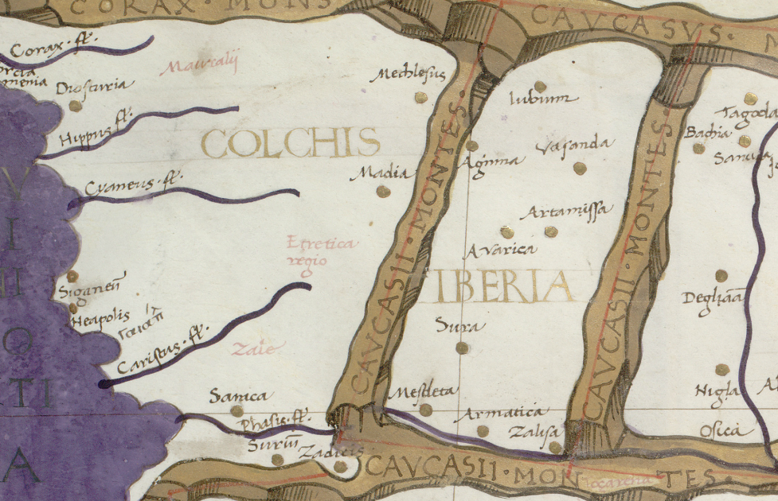

კახეთის ისტორია — ცალკეული მხარეების კახეთის, კუხეთისა და ჰერეთის, მაგრამ გაერთიანებული ისტორია. კახეთზე გადიოდა მნიშვნელოვანი გზები. ხელსაყრელი სტრატეგიული მდებარეობის გამო დროთა ვითარებაში თავდაპირველი კახეთის გარშემო გაერთიანდა მომიჯნავე პოლიტიკური ერთეულები. ადრინდელი ფეოდალურ ხანაში კახეთი უკვე ერწო-თიანეთისა და თუშ-ხევსურეთის ტერიტორიასაც მოიცავდა. VIII საუკუნის ბოლოს კახეთის შემადგენლობაში შევიდა აგრეთვე კუხეთი და ჰერეთის ტერიტორიის ნაწილი (XV საუკუნიდან კი მთელი ჰერეთი). XI საუკუნიდან კახეთის პოლიტიკური ცენტრი თელავი, XV საუკუნიდან — გრემი. საქართველოს ადმინისტრაციულ-ტერიტორიული დაყოფით კახეთი მოიცავს ახმეტის, გურჯაანის, დედოფლისწყაროს, თელავის, ლაგოდეხის, საგარეჯოს, სიღნაღის, ყვარლის მუნიციპალიტეტების ტერიტორიას და ქართველ მთიელთა ეთნოგრაფიულ კუთხეს — თუშეთს.
